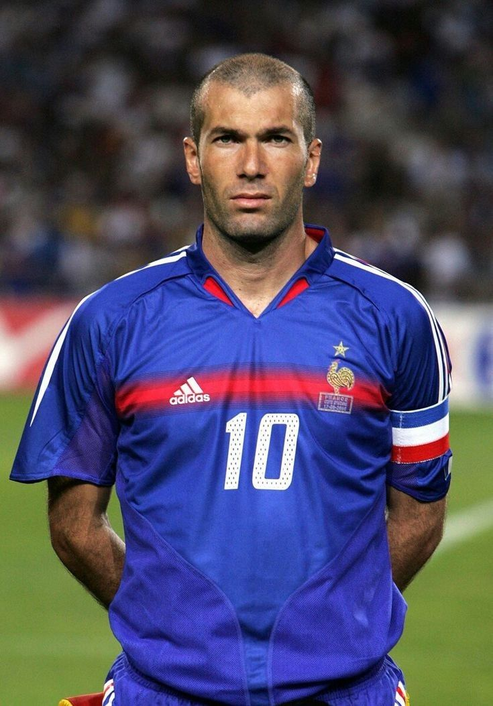
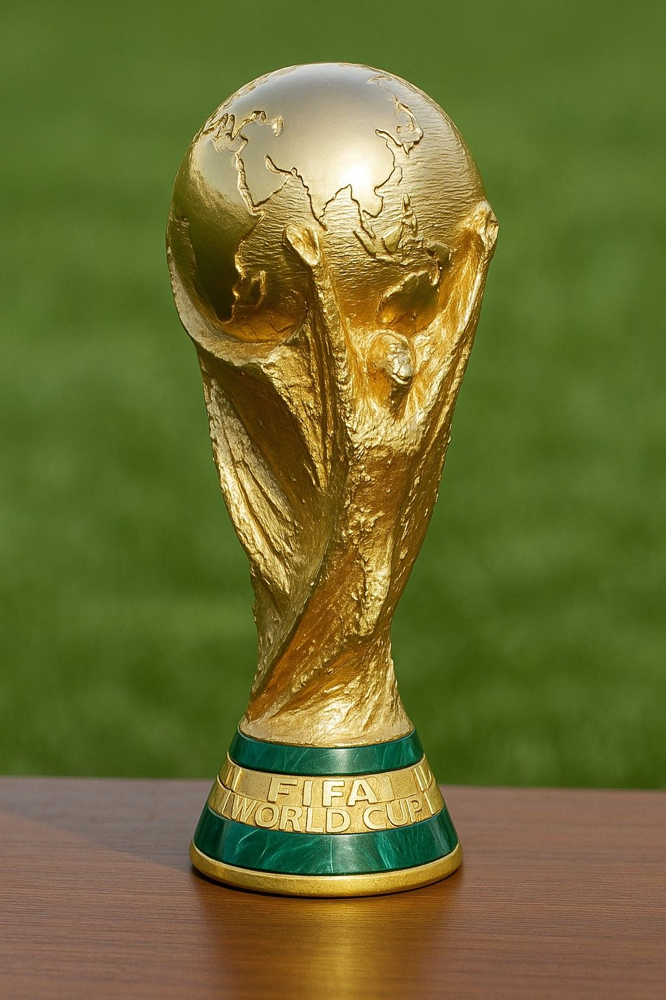
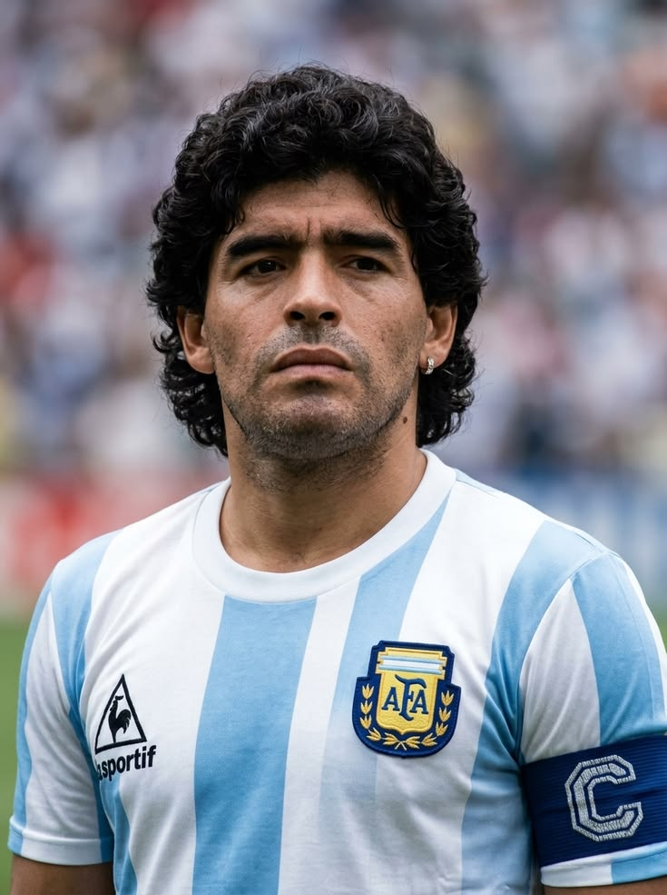
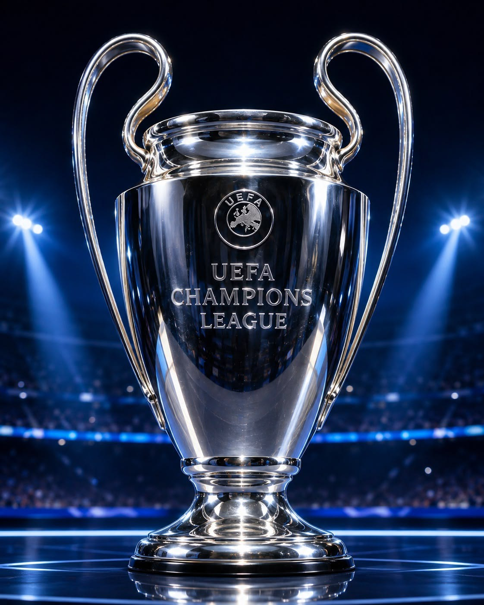

Зинедин Зидан — французский футболист и тренер алжирского происхождения, родившийся в 1972 году. Он выступал за «Ювентус», «Реал Мадрид» и сборную Франции. Зидан стал чемпионом мира в 1998 году и чемпионом Европы в 2000 году.
Подробнее »
Кубок чемпионата мира FIFA — главный трофей мирового футбола, который получает сборная, победившая на чемпионате мира. Современный кубок используется с 1974 года и изготовлен из золота.
Подробнее »
Диего Марадона — легендарный аргентинский футболист, родившийся в 1960 году. Он прославился благодаря выдающейся технике и дриблингу. Главным достижением Марадоны стала победа на чемпионате мира 1986 года.
Подробнее »
Кубок Лиги чемпионов УЕФА — трофей, который вручается победителю главного европейского клубного турнира. За него соревнуются сильнейшие футбольные клубы Европы.
Подробнее »
Роналдо Назарио, также известный как «Зубастик», — легендарный бразильский футболист. Он выступал за «Барселону», «Интер», «Реал Мадрид» и «Милан». Дважды становился чемпионом мира.
Подробнее »
Золотой мяч — ежегодная индивидуальная награда, которая вручается одному из лучших футболистов мира. Она была учреждена французским журналом France Football в 1956 году.
Подробнее »